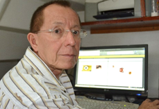

La Buena Visión, manual de prevención visual

Por: Omar Barrientos
Fecha: 26/07/2021
AGRADECIMIENTO
Mi agradecimiento al optometrista y oftalmólogo Rolando Barrientos F. y a la oftalmóloga Paula Ciaramelli por sus sugerencias; al artista gráfico Alex Casadiego,
autor de la portada, y al ingeniero Daniel Barrientos, por su valiosa ayuda.
descargar libro
POR EL MUNDO DE LA VISIÓN 08 02 21

Por: Omar Barrientos
Fecha: 26/07/2021
Por el mundo de la visión, nos lleva a un recorrido sencillo y fácil de comprender; de forma abierta aproxima al lector a los temas básicos
e importantes en la comprensión de elementos anatómicos y funcionales del ojo y el sistema visual.También aborda desde el punto de vista práctico,
sin profundizar en complejas teorías, los problemas o defectos visuales de mayor frecuencia en la población.
descargar libro
Antecedentes Mundiales e historia de la optometria en venezuela tomo I

Por: Omar Barrientos
Fecha: 26/07/2021
Sin mencionar a los ciegos de nacimiento o a quienes por procesos patológicos o accidentes, perdieron
su visión o parte de la misma, los defectos visuales existieron desde los albores mismos de la humanidad.
Tal vez muchos de ellos como producto de procesos visuales, indebidamente desarrolladosen el transcurso de
la transformación del “mono” en hombre, o a lo mejor ya los poseían estos antepasados nuestros o quizás como
combinación de ambas situaciones, o adquiridos más adelante por otros múltiples factores. Sobre esto hay
y habrá mucho por indagar y presumir aún, pero sobretodo, sin duda alguna, los seres humanos con deficiencias
en su visión de fácil, tratamiento hoy día, gracias a la indicación de lentes, debieron nacer, vivir y morir
con su defecto de la vista, sin que nada, ni nadie pudiese hacer algo para remediarlos.
descargar libro
Antecedentes Mundiales e historia de la optometria en venezuela tomo II

Por: Omar Barrientos
Fecha: 26/07/2021
En el tomo anterior, el numero I, se presentaron varios de los principales antecedentes mundiales de la Optometría, sus inicios en el país
y las primeras directivas del Colegio de Optometristas de Venezuela, desde la primera de Buenaventura Briceño Belisario en 1949-60, hasta la de Omar Barrientos Vargas 1979- 83.
En este tomo II se presentan otras directivas del COV y su actuar, en los períodos comprendidos entre 1983 de a 1993-95 de Roberto Matos.Se deben considerar estos períodos,
siguiendo los pasos de sus antecesores, descritos en el tomo I como épocas de lucha tras la búsqueda de una consolidación de la Optometría en Venezuela, como profesión de la salud
visual, independiente de la medicina, requerida de altos valores éticos, una práctica idónea y el ejercicio en salud pública, a la par de la búsqueda de la oficialización de sus estudios.
descargar libro
Catia , el cacique 29 05 17

Por: Omar Barrientos
Fecha: 26/07/2021
La historia del jefe Catia, del cacique rebelde, del indio compañero de Guaicaipuro y otros líderes indígenas de las tierras descubiertas, originarias, de la confrontación
de culturas entre el viejo mundo con atisbos de civilización y la llamada América, la del cono sur, la de la pequeña Venecia, la de Venezuela, comenzó a más de dos siglos,
antes del nacimiento de Simón Bolívar, El Libertador… Pero tal vez Catia nació con el ADN libertario, muy propio de esta rica geografía sureña.
descargar libro
TIRAMA, EL HIJO DEL CACIQUE CATIA

Por: Omar Barrientos
Fecha: 26/07/2021
Marcha para hostigar a santiago de león. la caroata abundada. recuerdos de su primera pesquería y de la batalla de maracapana. encuentro y receso
descargar libro
Mestizo 03 06 20

Por: Omar Barrientos
Fecha: 26/07/2021
UN MESTIZO DOMADOR DE POTROS
El potro de continuo corcoveó y el jinete incapaz de seguir montado, fue arrojado al suelo.
Varios minutos estuvo en el piso, soportando y esperando la desaparición de los dolores en sus
posaderas, espalda y manos. Al fin se levantó, se frotó las zonas aporreadas.
descargar libro
Un andino en la Independencia

Por: Omar Barrientos
Fecha: 26/07/2021
BIENVENIDA A SAN ANTONIO AL BRIGADIER BOLÍVAR. “VENGO A LIBERAROS E IMPONER EL REINO DE LA JUSTICIA”.
Descargar Libro